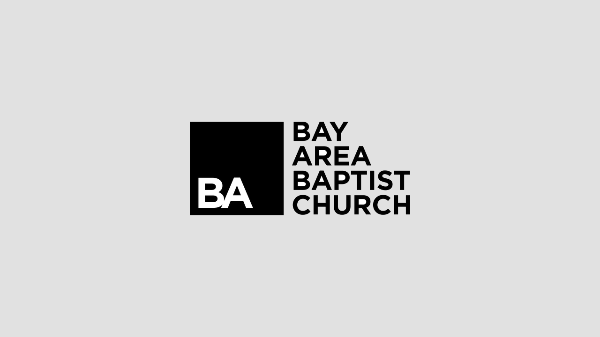

John
Hi there, send me your email to keep in touch!


Explore My
Experience

Berkeley Labs
Python Developer Intern
Python Developer Intern
Position: Python Developer Intern
Period: 2024
Role: Work with existing datasets to determine an algorithm capable of recognizing the boundaries of one or more crystals.
Project: New technique in electron crystallography targets small flawed crystals, identifying usable regions to determine crystal structure, with broad implications for materials like biological molecules and MOFs. Python Microscopy crystallography nanotechnology
Period: 2024
Role: Work with existing datasets to determine an algorithm capable of recognizing the boundaries of one or more crystals.
Project: New technique in electron crystallography targets small flawed crystals, identifying usable regions to determine crystal structure, with broad implications for materials like biological molecules and MOFs. Python Microscopy crystallography nanotechnology

CrossConnect
Full Stack Web Developer
Full Stack Web Developer
Position: Full Stack Web Developer
Period: 2023 - Present
Role: Spearheading the backend infrastructure of a Platform as a Service (PaaS) project using Django Framework and SQL. I contribute by designing and implementing Python functions to bolster project capabilities. Notably, I've achieved a significant 30% reduction in code complexity and enhanced maintainability through the strategic application of Django Template Language (DTL) and HTML, thus optimizing the efficiency of the framework.
CrossConnect: We're developing a solution for manufacturers to connect with company seekers needing services like CNC machining.We're building a user-friendly platform and revolutionizing how manufacturers and company seekers collaborate. Python Django Tailwind HTML JavaScript SQLite NGinx Gunicorn AWS EC2 React Figma
Period: 2023 - Present
Role: Spearheading the backend infrastructure of a Platform as a Service (PaaS) project using Django Framework and SQL. I contribute by designing and implementing Python functions to bolster project capabilities. Notably, I've achieved a significant 30% reduction in code complexity and enhanced maintainability through the strategic application of Django Template Language (DTL) and HTML, thus optimizing the efficiency of the framework.
CrossConnect: We're developing a solution for manufacturers to connect with company seekers needing services like CNC machining.We're building a user-friendly platform and revolutionizing how manufacturers and company seekers collaborate. Python Django Tailwind HTML JavaScript SQLite NGinx Gunicorn AWS EC2 React Figma

Cal State East Bay
Research Student
Research Student
Position: Research Student
Period: 2022 - 2023
Role: I developed a Python application for advanced stock price analysis, utilizing the VaderSentiment package for sentiment analysis on Reddit data, implementing the ARIMA model with TensorFlow and Keras for market trend insights, and efficiently processing 4,665 comments from 230 posts across 60 subreddits in 236.34 seconds.
Project: Our project involves developing a Python application for advanced stock price analysis. Using VaderSentiment for Reddit sentiment analysis and ARIMA with TensorFlow/Keras for market trend insights, we efficiently process large volumes of Reddit data, providing swift and accurate market analysis for informed decision-making. Python ARIMA Machine Learning TensorFlow Keras VaderSentiment Finance Stocks Data Analysis
Period: 2022 - 2023
Role: I developed a Python application for advanced stock price analysis, utilizing the VaderSentiment package for sentiment analysis on Reddit data, implementing the ARIMA model with TensorFlow and Keras for market trend insights, and efficiently processing 4,665 comments from 230 posts across 60 subreddits in 236.34 seconds.
Project: Our project involves developing a Python application for advanced stock price analysis. Using VaderSentiment for Reddit sentiment analysis and ARIMA with TensorFlow/Keras for market trend insights, we efficiently process large volumes of Reddit data, providing swift and accurate market analysis for informed decision-making. Python ARIMA Machine Learning TensorFlow Keras VaderSentiment Finance Stocks Data Analysis

Revivn
Tech I
Tech I
Position: Tech I
Period: 2022 - 2023
Role: I diagnose and restore computer hardware, which involves repairing logic boards and components. By implementing low-level BASH scripting, I've enhanced processing efficiency. Consistently, I achieve a remarkable weekly throughput, processing an average of 120+ laptops, showcasing high productivity in hardware restoration.
Revivn: Our purpose is to breathe new life into discarded laptops sourced from major corporations. We specialize in restoring and reviving these laptops to their optimal condition, ensuring they are ready to be resold and given a second chance. By rescuing technology that would otherwise go to waste, we aim to minimize electronic waste and contribute to a more sustainable future. SHELL Bash OS Computer Hardware BIOS Circuit Assembly
Period: 2022 - 2023
Role: I diagnose and restore computer hardware, which involves repairing logic boards and components. By implementing low-level BASH scripting, I've enhanced processing efficiency. Consistently, I achieve a remarkable weekly throughput, processing an average of 120+ laptops, showcasing high productivity in hardware restoration.
Revivn: Our purpose is to breathe new life into discarded laptops sourced from major corporations. We specialize in restoring and reviving these laptops to their optimal condition, ensuring they are ready to be resold and given a second chance. By rescuing technology that would otherwise go to waste, we aim to minimize electronic waste and contribute to a more sustainable future. SHELL Bash OS Computer Hardware BIOS Circuit Assembly
TDK Corporation
Covid Proctor
Covid Proctor
Position: Covid Proctor
Period: 2022
Role: Ensure timely preparation of Covid-19 test kits while upholding stringent cleanliness and sanitation protocols within the designated area and facilities. Foster effective communication and collaboration among team members to optimize operational efficiency.
TDK: Leading global electronics company specializing in the development and manufacturing of innovative electronic components and solutions. With a commitment to delivering cutting-edge technology and superior quality products, TDK serves a diverse range of industries including automotive, consumer electronics, industrial, and healthcare. Known for its expertise in magnetic, acoustic, and sensor technologies, TDK continues to drive innovation and shape the future of electronics worldwide. Teamwork Communication Time Management Computer Hardware Human Services
Period: 2022
Role: Ensure timely preparation of Covid-19 test kits while upholding stringent cleanliness and sanitation protocols within the designated area and facilities. Foster effective communication and collaboration among team members to optimize operational efficiency.
TDK: Leading global electronics company specializing in the development and manufacturing of innovative electronic components and solutions. With a commitment to delivering cutting-edge technology and superior quality products, TDK serves a diverse range of industries including automotive, consumer electronics, industrial, and healthcare. Known for its expertise in magnetic, acoustic, and sensor technologies, TDK continues to drive innovation and shape the future of electronics worldwide. Teamwork Communication Time Management Computer Hardware Human Services

Bay Area Baptist Church
AV
AV
Position: AV
Period: 2014 - 2020
Role: I perform and set up event livestreams using StreamLabs and ProPresenter. I swiftly diagnose technical issues with the audio and video setup. Additionally, I create visual arts for specific events and produce short videos/films, as well as edit videos as needed.
BABC: Provides a welcoming and nurturing environment for individuals and families to grow in their faith, foster spiritual connections, and serve the community with compassion and love. Through meaningful worship experiences, biblical teachings, and outreach initiatives, we aim to inspire and empower individuals to live out their Christian values and make a positive impact in the world around them. Teamwork AV Adobe Suite Blackmagic Photography Cinematography
Period: 2014 - 2020
Role: I perform and set up event livestreams using StreamLabs and ProPresenter. I swiftly diagnose technical issues with the audio and video setup. Additionally, I create visual arts for specific events and produce short videos/films, as well as edit videos as needed.
BABC: Provides a welcoming and nurturing environment for individuals and families to grow in their faith, foster spiritual connections, and serve the community with compassion and love. Through meaningful worship experiences, biblical teachings, and outreach initiatives, we aim to inspire and empower individuals to live out their Christian values and make a positive impact in the world around them. Teamwork AV Adobe Suite Blackmagic Photography Cinematography

Chase Suite Hotel
Front Desk
Front Desk
Position: Front Desk
Period: 2018
Role: Provided customer services for guests that checked in, will check in, and that checked out. Solve and look for solutions to issues or problems that guests encounters. My position requires teamwork and hospitality to be able to provide guests good. Solve simple mathematical problems quickly and with ease which are applicable for counting the cash drawer up to calculating room and taxes as well as rate adjustments (if needed). Ability to learn the system of both the hotel and the computer system being used.
BABC: Provide guests with a comfortable and enjoyable stay, offering exceptional hospitality and amenities that cater to their needs. Our goal is to create a welcoming environment where guests can relax, recharge, and feel at home during their travels. With a commitment to superior service and attention to detail, we strive to exceed our guests' expectations and create memorable experiences that keep them coming back. Teamwork Customer Service Hospitality Kiosk Time Management
Period: 2018
Role: Provided customer services for guests that checked in, will check in, and that checked out. Solve and look for solutions to issues or problems that guests encounters. My position requires teamwork and hospitality to be able to provide guests good. Solve simple mathematical problems quickly and with ease which are applicable for counting the cash drawer up to calculating room and taxes as well as rate adjustments (if needed). Ability to learn the system of both the hotel and the computer system being used.
BABC: Provide guests with a comfortable and enjoyable stay, offering exceptional hospitality and amenities that cater to their needs. Our goal is to create a welcoming environment where guests can relax, recharge, and feel at home during their travels. With a commitment to superior service and attention to detail, we strive to exceed our guests' expectations and create memorable experiences that keep them coming back. Teamwork Customer Service Hospitality Kiosk Time Management
A little bit
About Me
techy section dsadsads dsdsad fewds gefd
dadf3 ewf fdsg wgds gesd gg ewew few fe
fe wfweef w j l ds fgwein fdsfksls
nontechy rewfdgrt gert dx ggwg ggwegsdgdsg sgds ggwegsdgdsgg
dsgsdg sdgs gsdgsxgg wgdsg sgsd gefd
gdsgdsggwegdsg g ggewgiopipdsfoidsf dsfiowe